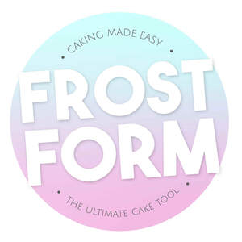

Trade Mark Journal No.2025/022 30 May 2025
UK00004200022 7 May 2025 (8,16,21)

- Class 8
- Cake cutters; cake levellers; cutters for decorating cakes, baked goods and confectionery; hand tool embossers; cake cutters, cake levellers, hand tool embossers and cutters for decorating cakes, baked goods and confectionery being part of a set provided in hampers or as gift sets.
- Class 16
- Stencils for cake decorating; templates for decorating cakes, baked goods and confectionery; paper for lining cake tins; stencils and templates for cake decorating being part of a set provided in hampers or as gift sets.
- Class 21
- Cake moulds; cake moulds of common metal; cake moulds of non-metallic material; cake stands; cake stands of non-metallic materials; cake trays; cake rings; cake tins; cake domes; cake brushes; cake bases; cake rests; cake plates; cake servers; cake pans; disposable paperboard bakeware; cookie cutters; cookware for decorating cakes, baked goods and confectionery; Cake moulds, cake moulds of common metal, cake moulds of non-metallic material, cake stands, cake stands of non-metallic materials, cake trays, cake rings, cake tins, cake domes, cake brushes, cake bases, cake rests, cake plates, cake servers, cake pans, disposable paperboard bakeware, cookie cutters and cookware for decorating cakes, baked goods and confectionery being part of a set provided in hampers or as gift sets.
Emily Coyle
Paul Coyle
Representative: Tomkins & Co